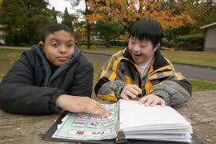

Understanding Multiple Disabilities Including Deaf-Blindness

Multiple Disabilities
Multiple Disabilities refer to a condition where an individual has more than one type of disability, which together create complex challenges that affect their ability to perform daily activities and interact with their environment. This term can encompass a variety of combinations of disabilities, such as physical, sensory, intellectual, or developmental impairments.
Deaf-Blindness
Deaf-Blindness is a specific type of multiple disability where an individual has both significant hearing and vision impairments. The combination of these sensory impairments profoundly impacts communication, mobility, and access to information, making it challenging for the individual to interact with their environment and engage in activities that typically rely on hearing and sight.
Key Points About Multiple Disabilities Including Deaf-Blindness:
Characteristics of Multiple Disabilities:
- Complex Needs: Individuals may have a combination of physical, sensory, and cognitive impairments, requiring comprehensive support and tailored interventions.
- Varied Combinations: The disabilities can range from physical and sensory impairments to intellectual and developmental challenges.
- Individualized Impact: The specific combination and severity of disabilities will affect each person differently, requiring personalized approaches to support and care.
Characteristics of Deaf-Blindness:
- Dual Sensory Impairment: Involves both significant loss of hearing and vision, which affects communication, orientation, and mobility.
- Communication Challenges: Individuals may use alternative communication methods such as tactile sign language, braille, or assistive technologies.
- Mobility and Safety: Navigating environments can be particularly challenging, often requiring specialized mobility training and aids.
Diagnosis and Assessment:
- Comprehensive Evaluation: Requires a multidisciplinary approach to assess the range of disabilities and their impact on the individual's functioning.
- Specialized Testing: Includes assessments for both hearing and vision, as well as evaluations of cognitive and physical abilities.
Treatment and Support:
- Personalized Interventions: Tailored educational and therapeutic interventions to address the specific needs of each individual.
- Assistive Technologies: Use of devices such as hearing aids, braille readers, and communication boards to enhance interaction and access to information.
- Rehabilitation Services: May include physical therapy, occupational therapy, and orientation and mobility training.
Management and Adaptations:
- Individualized Education Plans (IEPs): Customized plans to address educational needs and promote skill development.
- Environmental Modifications: Adjustments to the living or learning environment to accommodate sensory impairments and enhance accessibility.
- Family and Caregiver Support: Training and resources to help families and caregivers provide effective support and advocacy.
Prevention and Advocacy:
- Early Intervention: Early diagnosis and intervention can improve outcomes and support developmental progress.
- Advocacy and Awareness: Promoting understanding and inclusion for individuals with multiple disabilities, including deaf-blindness, in community and educational settings.
Living with Multiple Disabilities Including Deaf-Blindness
Individuals with multiple disabilities, including deaf-blindness, require a holistic and individualized approach to support. With appropriate interventions and accommodations, they can achieve greater independence and quality of life. Emphasizing strengths, providing tailored support, and fostering inclusive environments are key to helping individuals with these complex needs thrive.